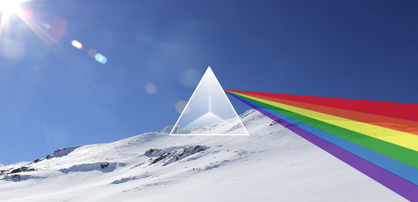
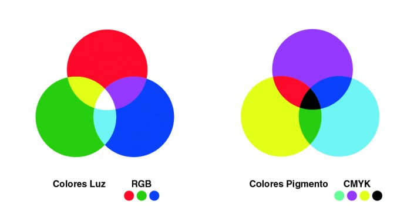
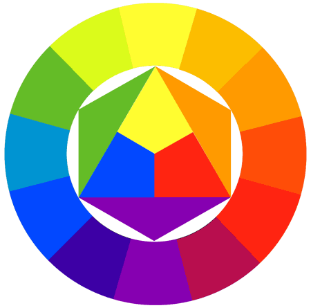
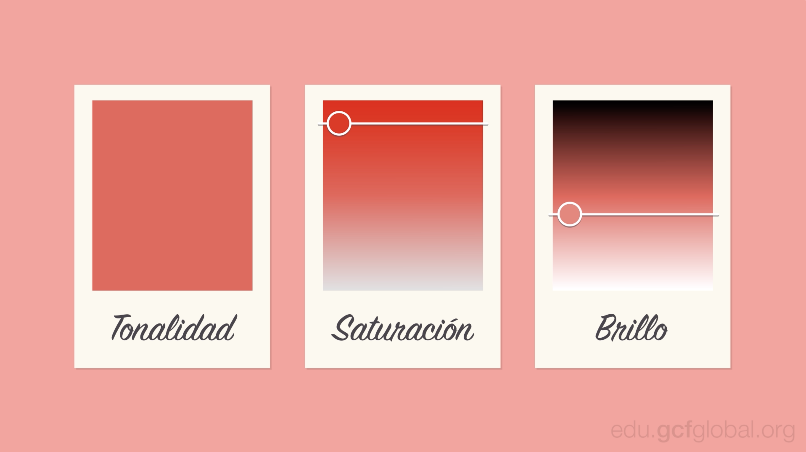
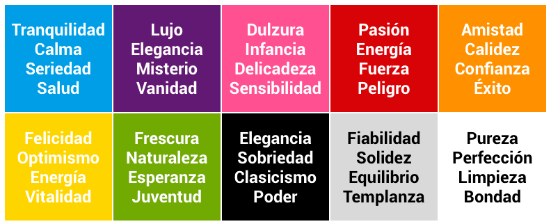
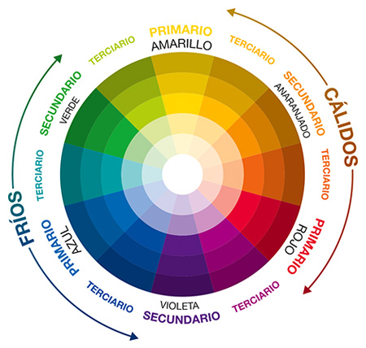

TEORÍA DEL COLOR:
¿Qué es el Color?
Según la Real Academia de la Lengua Española, en su primera definición, el color es una ” Sensación producida por los rayos luminosos que impresionan los órganos visuales y que depende de la longitud de onda”.
El mundo es incoloro. Se podría decir que todo el color que vemos no existe. Es una percepción. Los objetos poseen la característica de absorber determinadas partes del espectro lumínico. La luz que no es absorbida se remite y transmite diferentes estímulos de color al de la ambientación general. Al llegar estos estímulos hasta el órgano de la vista, nos produce una sensación de color.

Se considera que el color se genera de la descomposición de la luz blanca proveniente del sol, o de un foco o fuente luminosa artificial. La apariencia de esos colores siempre es visual, y variará dependiendo del tipo de rayos luminosos, su intensidad o el modo en que son reflejados.
La luz blanca está formada por tres colores básicos: rojo, verde y azul. Este fenómeno fue descubierto por Issac Newton al hacer pasar un rayo de luz blanca por medio de un prisma de cristal, este haz de luz se dividió en un espectro de colores idéntico al del arco iris.
Colores Primarios
El ojo cuenta con tres tipos de células visuales, que rigen tres tipos diferentes de sensaciones, correspondientes a los colores primarios (azul, verde y rojo). A partir de ellos se forma para cada sensación de color un código de tres partes.
Estos colores no surgen de la mezcla de ningún color, por eso son colores primarios.

Colores Secundarios
Los colores secundarios son aquellos que se forman de la mezcla, por partes iguales, de dos primarios (es decir: de la mezcla del azul y el amarillo surge el verde, del rojo y amarillo, el naranja y del rojo y azul, el violeta). Por su parte, los colores terciarios se forman con la mezcla, por partes iguales, de un color primario con uno secundario adyacente. Así, de esta combinación resulta el rojo violáceo, rojo anaranjado, amarillo anaranjado, amarillo verdoso, azul verdoso y azul violáceo.

Características de los Colores
✓ Tono de un Color:
El tono es el color en sí mismo, es la cualidad que define la mezcla de un color con el blanco o con el negro. Así podemos decir que existen tonos cálidos o tonos fríos. Los cálidos son aquellos tales como el rojo, el amarillo y los naranjas, mientras que los fríos son el azul y el verde. El verde si tiene más cyan que amarillo, tendría una tendencia a ser frío, y si tiene más amarillo parecería ser más cálido. Por eso es importante saber manejar los tonos.
✓ Saturación de un Color:
La saturación constituye la pureza del color respecto al gris, y depende de la cantidad de blanco que presente. Cuanto más saturado está un color, más puro es y menos mezcla de gris posee.
✓ Brillantez de un Color:
La brillantez o brillo de un color es la relación existente entre la intensidad del estímulo luminoso – también conocida como luminancia – y la sensación percibida, conocida como brillantez. Para un color de un matiz y saturación determinados, en la misma medida que la luminosidad alcanza el ojo aumentará la brillantez.
Desde tiempos antiguos grandes artistas incluyeron dentro de sus técnicas, la armonización del color, la cual consiste en pintar con una tendencia de color determinada. Esta técnicas que utilizaron grandes artistas (Rubens, Velázquez y muchos más) se utilizan en la actualidad tanto en pintura como en diseño para la captación de público determinado.

Psicología del Color
✓ Color Rojo:
Es un color muy intenso, apasionante. Usado frecuentemente por los diseñadores para llamar la atención sobre un elemento en particular. Debe usarse de manera lógica, pues su intensidad y excitación puede cansar.
✓ Color Naranja:
Color cálido, activo y dinámico, que actúa como estimulante de los tímidos y tristes. Posee fuerza activa, radiante y expansiva. Es muy útil en pequeñas dosis ya que en grandes extensiones es atrevido y agresivo.
✓ Color Amarillo:
Está relacionado con la inteligencia, fomenta la creatividad, es un color de los más luminosos y cálidos. En diseño se utiliza para atraer la atención.
✓ Color Verde:
Evoca lo relacionado con la naturaleza y la vegetación, lo fresco y lo sedante. Es el color calmado, incita al equilibrio por lo cual es el más tranquilo y sedante.
✓ Color Azul:
El color frío por excelencia. Simboliza la frescura, la calma y el reposo, se le asocia con la inteligencia y las emociones profundas, con la amistad, la fidelidad, la serenidad… Si es muy claro denota optimismo y pureza.
✓ Color Morado:
Es el color del misterio, de la lucidez y reflexión. Tiene que ver con lo espiritual y emocional. Es un color que bien utilizado es elegante.
✓ Color Rosa:
Según la psicología del color, el rosa es señal de esperanza, que inspira calidez y sentimientos de comodidad. Además de proyectar buenos pensamientos de que todo estará bien.
✓ Color Cafe:
Es el color del otoño, da la impresión de equilibrio. Es confortable y masculino. Representa el color de la tierra.
✓ Color Blanco:
Implica inocencia y pureza, nos ayuda en momentos de estrés, a seguir adelante. Significa igualdad y unidad. Contiene todos los colores del espectro y representa lo positivo y lo negativo de cada uno de ellos.
✓ Color Negro:
El color negro es útil para transmitir elegancia, nobleza, sofisticación, o tal vez un toque de misterio. Es autoritario y puede evocar emociones fuertes. Al contrario que el blanco es la ausencia total de luz.
✓ Color Gris:
El gris es un color que está en el medio entre el blanco y el negro, es muy idóneo para la neutralidad. No carga visualmente y utilizado el la justa medida puede transmitir elegancia y lujo. Al ser un color tan neutral no tenemos que abusar de él, o corremos el riesgo de generar tristeza y melancolía, como un día de lluvia.

Colores RGB y CMYK
La teoría del color también se puede aplicar al ámbito digital. El uso del color de un sitio web es muy importante, ya que como se ha explicado, los colores son capaces de transmitir una infinidad de sensaciones o sentimientos. El uso adecuado de un color es una clave segura de éxito para captar la atención de los visitantes de nuestra página web, y se muestren receptivos.
✓ Colores Pigmento (CMYK):
Los colores pigmento son los colores físicos (pinturas, tintas…) son el azul cian, el rojo magenta y el amarillo medio con el blanco y el negro (CMYK).
✓ Colores Luz (RGB):
Los colores luz (para todo tipo de dispositivos) son el azul, el magenta, el amarillo y el verde, el blanco es la suma de todos estos y el negro es la ausencia total de color (RGB).
Los monitores de ordenador muestran siempre los colores con el modelo RGB, es decir, la mezcla de los tres primarios luz: Rojo (red), verde (green) y el azul (blue). Por lo cual, en la web, un color se define por la cantidad de cada uno de estos colores primarios que contiene, cantidad que va de 0 a 255. Habitualmente se expresa con seis dígitos (RRGGBB) para cada componente.
Un color cualquiera tiene rojo= 20, verde= 120 y azul=170, hablando en decimales. Otro ejemplo sería el negro, representado por R=00, G=00 B=00, pues es la ausencia total del color mientras que el blanco seria R=255 G=255 B=255.
Para una página web exitosa, lo mejor es mezclar colores que sean armónicos entre sí y qué no usar más de 4 colores para lograr un buen esquema, también utilizaremos las diferentes luminosidades de esos mismo colores.
El modelo CMYK se basa en los colores de salida de impresión (colores pigmento) C= cyan, M= magenta y Y= yellow y se mide en porcentaje.

Para retroalimentar los temas, te recomendamos este video:
Nombre del Alumno |
Carrera |
Semestre |
Flores Juan Fco. |
Ingeniería en Comunicación Multimedia |
Primero |